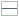
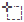
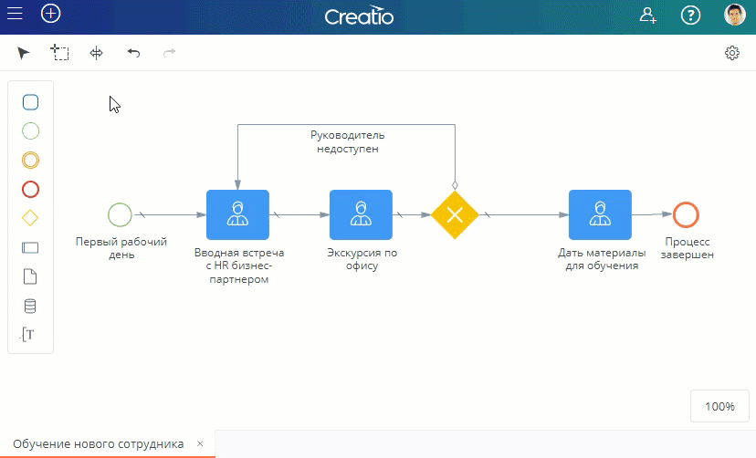
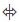
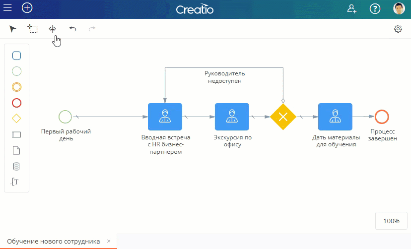
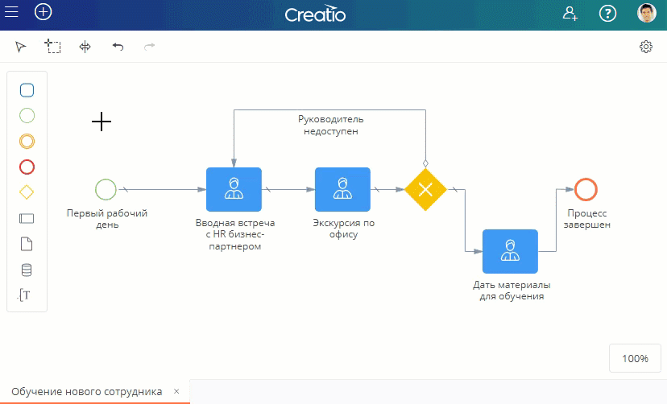

Для создания бизнес-процесса необходимо добавить элементы в рабочую область дизайнера процессов, разместить их в определенном порядке, настроить переходы между ними и добавить описания.
Создать новый процесс
Вы можете добавить новый процесса такими способами:
- Нажать кнопку на панели библиотеки процессов и выбрать Процесс. Новый процесс будет добавлен в указанную папку библиотеки процессов.
- Выбрать папку в библиотеке процессов и нажать кнопку Создать процесс в рабочей области дизайнера процессов.
- В меню папки в библиотеке процессов нажать кнопку и выбрать Добавить процесс.

Добавить элементы в процесс
Добавить элементы в бизнес-процесс можно следующими способами:
- Перетащить элемент в рабочую область дизайнера процессов из панели элементов процесса.
- Выбрать элемент в контекстном меню любого из ранее добавленных элементов и перетащить в рабочую область. В этом случае на диаграмму процесса будет добавлен новый элемент, связанный с предыдущим элементом с помощью потока управления.
Добавить потоки
Чтобы соединить элементы на диаграмме процесса потоком, выделите элемент, в контекстном меню выберите поток  и протяните его, зажав правую кнопку мыши, к следующему элементу. После добавления потока на диаграмму вы можете изменить его расположение и тип (поток по умолчанию или условный).
и протяните его, зажав правую кнопку мыши, к следующему элементу. После добавления потока на диаграмму вы можете изменить его расположение и тип (поток по умолчанию или условный).
Изменить тип элемента
На панели элементов процесса и в контекстном меню элемента содержатся только общие категории элементов: задача, стартовое, промежуточное и конечное события, шлюз, поток.
Чтобы добавить определенный шаг процесса, выберите нужный элемент (например,“Задача”), добавьте его на диаграмму процесса, после чего укажите тип элемента (например, “Пользовательская задача”).
Чтобы изменить тип элемента:
- Выделите элемент на диаграмме процесса.
- В контекстном меню элемента нажмите кнопку
 .
. - В появившемся меню выберите необходимый тип элемента.
Аналогичным образом вы можете изменить условие выполнения задачи и тип потока:
- Чтобы добавить задаче маркер цикла , параллельных множественных экземпляров , последовательных множественных экземпляров или маркер компенсации , выделите элемент на диаграмме процесса, в контекстном меню нажмите кнопку и выберите необходимый маркер.
- Для использования потока по умолчанию или условного потока добавьте на диаграмму процесса поток управления , выделите его, нажмите в контекстном меню кнопку
 и смените тип потока на необходимый.
и смените тип потока на необходимый.
Добавить описание
Используйте панель настроек дизайнера процессов, чтобы изменить заголовок процесса или элемента и добавить описание, которое необходимо для документирования бизнес-процессов.
Убедитесь, что описания процесса и каждого из элементов заполнены. Обычно описание элемента содержит информацию о том, что происходит при выполнении этого элемента в ходе процесса.
Открыть панель настроек можно такими способами:
- Двойным кликом по элементу процесса. В этом случае откроется панель настроек элемента. Двойным кликом на пустом участке рабочей области. В этом случае откроется панель настроек процесса.
- Нажатием кнопки в правой верхней части окна дизайнера процессов. В этом случае откроется панель настроек последнего выделенного элемента. Если выделенных элементов на диаграмме не было, то откроется панель настроек бизнес-процесса.
Добавить дорожки
Пулы и дорожки используются в диаграммах процессов, чтобы упорядочить элементы. На дорожках обычно группируют шаги процесса, которые выполняются определенными участниками, или задачи одного типа. Добавить дорожку на диаграмму процесса можно в любой момент, но рекомендуется начинать работу именно с этого. Так вы сможете в дальнейшем добавлять элементы сразу в пул или на дорожку, исключив перемещение по рабочей области фрагментов уже настроенного процесса.
- Чтобы добавить пул , выберите его на панели элементов процесса и перетащите мышкой в рабочую область.
- Чтобы добавить дорожку, выберите пул на диаграмме процесса и нажмите кнопку или . Дорожка будет добавлена в указанный пул, в соответствии с выбранным вариантом размещения (выше или ниже).
- Чтобы разделить дорожку на две части, выделите ее и нажмите кнопку .
Выделить и переместить элементы
Используйте инструмент  Лассо, чтобы одновременно выделить несколько элементов на диаграмме процесса. Выделенные элементы можно переместить, скопировать (CTRL + C) или удалить (DEL).

Используйте инструмент  Произвольное перемещение, чтобы сдвинуть элементы на диаграмме вправо/влево или вверх/вниз. Например, вы можете зажать правую клавишу мыши и протащить курсор вниз. В этом случае все элементы, которые находятся ниже курсора мыши, сдвинутся вниз.

Инструмент Выделение используется для стандартных действий с элементами в рабочей области. Используйте панель инструментов, чтобы переключиться на Выделение после использования Лассо или Произвольного перемещения.

Для перемещения по большим диаграммам кликните мышью на свободном пространстве, зажмите правую кнопку и перетащите поле рабочей области на нужное место. Чтобы изменить масштаб диаграммы, зажмите CTRL и прокрутите колесико мыши. Используйте меню масштабирования, чтобы вернуться к стандартному размеру и расположению диаграммы.
Для быстрой навигации по диаграмме воспользуйтесь мини-картой.